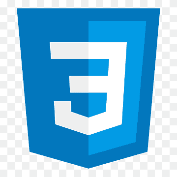

¡Hola! Soy Luana Canselmo, estudiante de tercer año en la Tecnicatura en Desarrollo de Software. Me introduzco con mucha pasión en el gran mundo de la programación. Mi pasión radica en la resolución de problemas. Cada bug es un desafío emocionante y cada proyecto es una oportunidad para superar obstáculos y alcanzar nuevas metas. Te invito a explorar mis redes sociales donde podrás visualizar mejor mi trabajo.
Mi enfoque especializado en el backend me ha permitido explorar una amplia gama de tecnologías y herramientas para construir infraestructuras escalables y eficientes. Desde la arquitectura hasta la implementación, disfruto enfrentando desafíos y diseñando soluciones que impulsen el rendimiento y la funcionalidad de los sistemas.
Si bien estoy en constante búsqueda de mejora, disfruto creando composiciones visuales atractivas y comunicativas. Mi portafolio es un testimonio de mi dedicación para transformar ideas en diseños impactantes. Reconozco que siempre hay espacio para el crecimiento, y estoy comprometido a aprender y evolucionar en esta disciplina.
El mundo del Community Manager me fascina, y estoy emocionado de comenzar un curso para expandir mis habilidades en esta apasionante disciplina. Creo en la importancia de construir y mantener conexiones significativas en línea.
sistema de gestión conectado a phpMyAdmin con funciones de ventas, clientes, productos y proveedores. Incluye generación automática de facturas en PDF, control de inventario en Excel, roles de administrador y usuario, y la capacidad de crear usuarios desde la aplicación.
ver trabajo en linkedin repositorioel personal autorizado puede gestionar eficientemente la carga de turnos. Incluye la capacidad de agregar pacientes y médicos, con un sistema que relaciona la información, asegurando traer automáticamente los datos del paciente y el médico correspondiente.
ver trabajo en linkedin repositorioContiene sesiones con rol para la administración de los productos y API de WhatsApp para consultar productos.
ver trabajo en linkedin repositorioContiene un crud, un controlador Rest, capa de servicio, repositorio, la clase Entidad y está comunicado con la base de datos Mysql.
ver trabajo en linkedin repositorioluanacanselmocarla@gmail.com
2617142180
Argentina